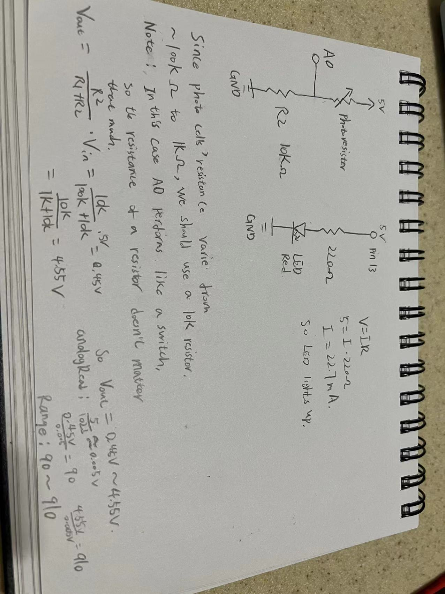
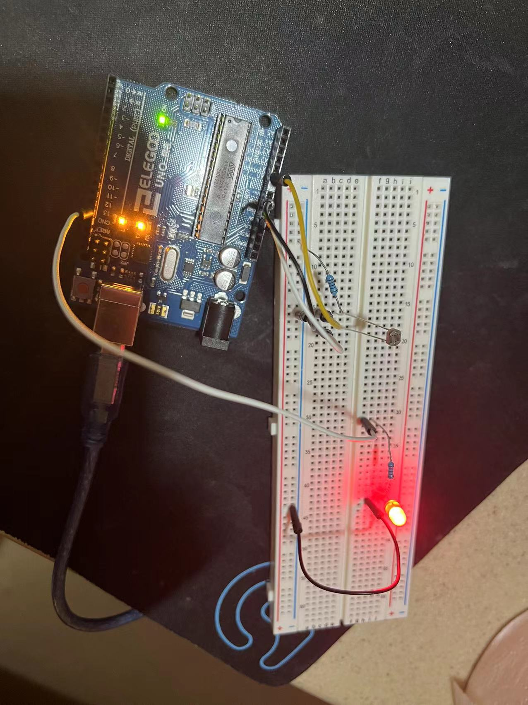
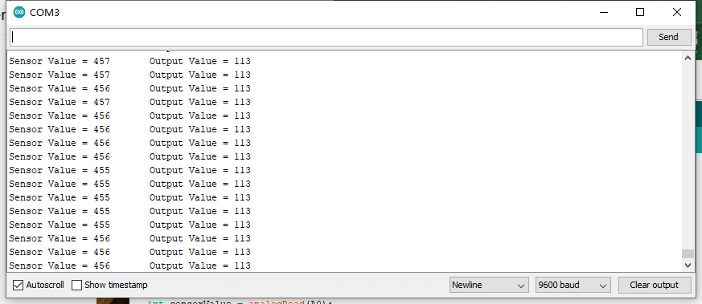

Assignment3: InputOutput

This is the the gif for the circuit's operation!
Circuit's Schematic
Photo of the Circuit

Monitor screen
Firmware:
void setup() {
// initialize the LED pin as an output:
pinMode(13, OUTPUT);
// initialize A0 as an input:
pinMode(A0, INPUT);
// initialize serial communication at 9600 bits per second:
Serial.begin(9600);
}
void loop() {
// read the input pin:
int sensorValue = analogRead(A0);
// delay in between reads for stability
delay(1);
// map it to the range of the analog out:
int outputValue = map(sensorValue, 0, 1023, 0, 255);
// print text in the serial monitor:
Serial.print("Sensor Value = ");
// print sensorValue in the serial monitor:
Serial.print(sensorValue);
// print text in the serial monitor:
Serial.print("\t Output Value = ");
// print outputrValue in the serial monitor:
Serial.println(outputValue);
// if the outputValue is bigger than 110 (which is the normal received value by testing),
// turn the pin 13 on. 255 is the is max duty cycle of analogWrite.
if(outputValue >= 110){
analogWrite(13, 255);
// if the outputValue is less than 110 due to the light changes,
// turn the pin 13 off. 0 is the is min duty cycle of analogWrite.
} else {
analogWrite(13, 0);
}
}